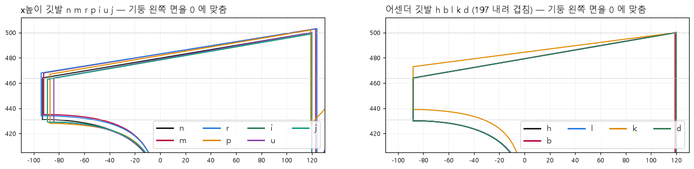
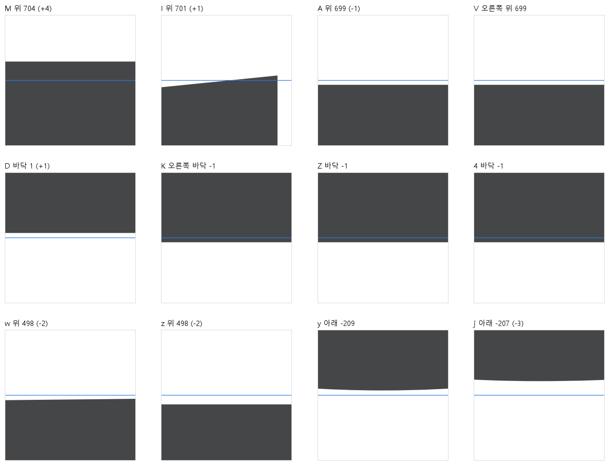
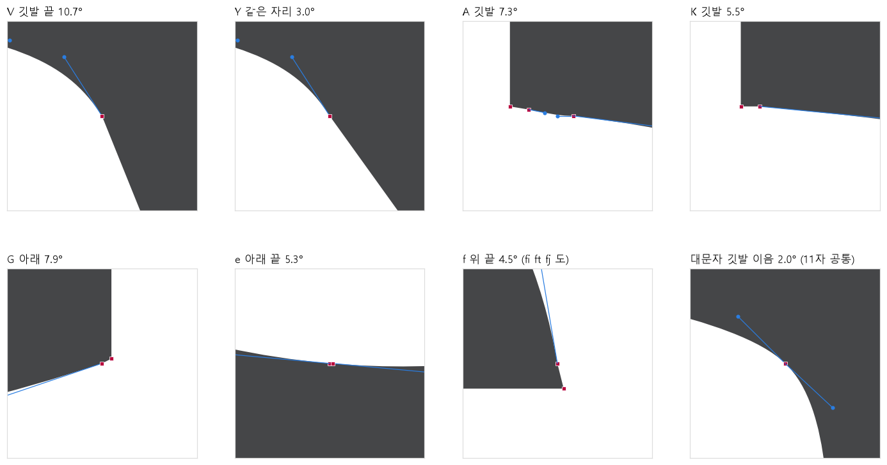
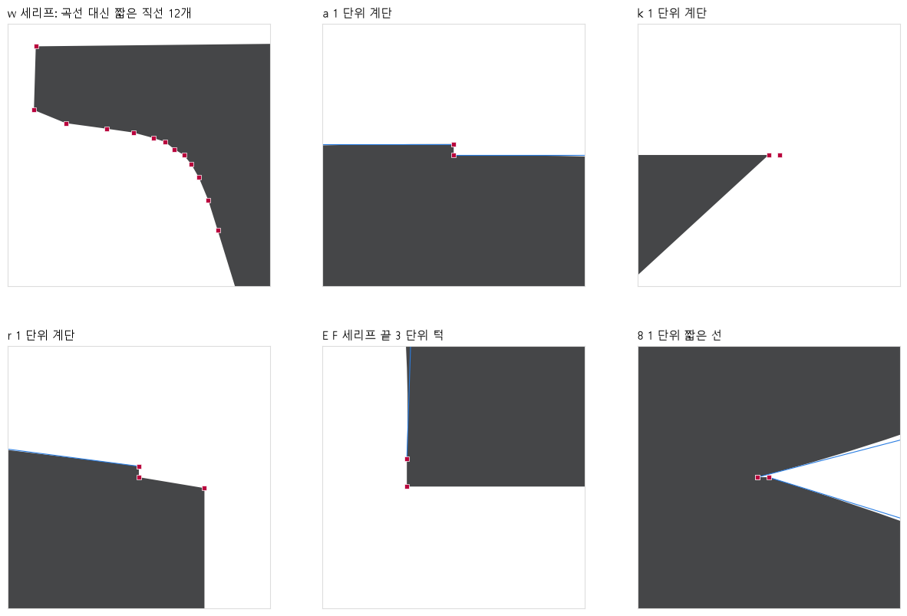
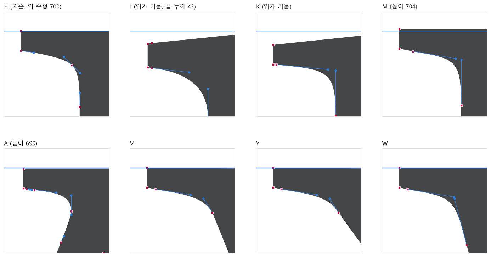
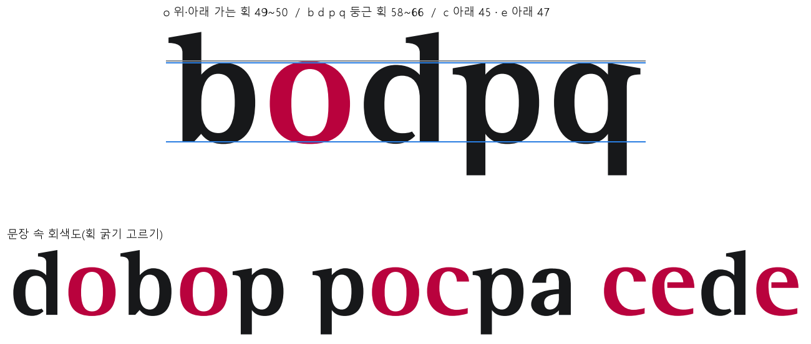
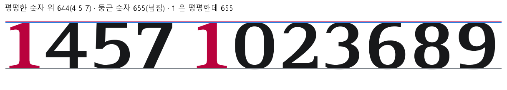
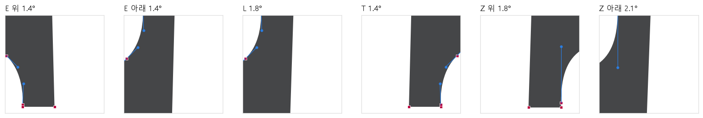
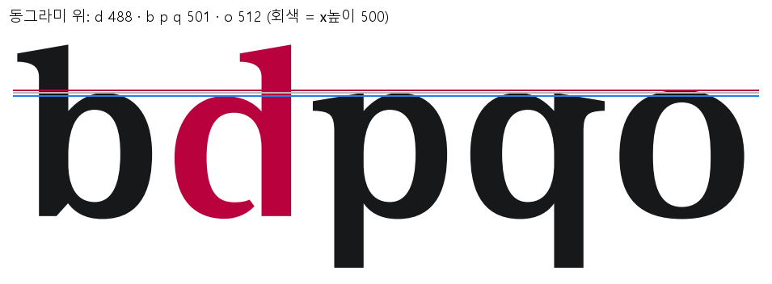

FnGuide Logotype v1.33전용서체 3차 디자인 크리틱 보고서 — 미적 완성도와 조형 완성도
참여: 폰트 디자이너 · CI/BI 디자이너 · 프로덕트 디자이너 · 대상: out/font-update/v1.33 (세로 줄기 축선 맞춤 11자를 넣은 작업본, 공개 전) · 이전 보고서: 1차 · 2차
이 보고서의 전문가 3인은 AI가 각 분야의 관점을 나눠 맡아 쓴 것입니다. 실제 디자이너의 검수를 대신하지 않습니다. 이번 회차에서는 F 글자에서 발견된 "같은 줄기인데 2 단위 어긋남" 같은 눈으로 찾기 어려운 미세한 흠을 전체 글자(137자)에서 숫자로 찾았습니다. 그다음 그 흠이 아름다움과 완성도에 어떤 영향을 주는지 전문가들이 판단했습니다. 수치는 metrics-v1.33.json, 측정 도구는 scripts/font_critique/crit3_measure.py입니다. 단위는 글자 높이 1000 기준입니다. 서체 파일은 고치지 않았습니다.
반영 (2026-11-09): 사용자가 ❶~❾ 모두 반영으로 결정했습니다. v1.33에 넣어(64자) 2026-11-09 공개했습니다. 로고타입 19종도 다시 만들었습니다. 전후 비교: v1.33 전후 미리보기. 처음 보고서에서 바로잡은 곳: c·e 가는 획은 아래가 아니라 위, g 498 은 둥근 넘침이 아니라 평평한 윗면(500 으로), G 아래 모서리는 ❺에서 빼고 유지.
1. 한눈에 보기
1·2차에서 지적한 큰 문제는 모두 해결됐습니다. 이번에 남은 것은 "같은 부품인데 글자마다 1~5 단위씩 다른 것"입니다. 하나하나는 작은 크기에서 보이지 않습니다. 그러나 로고·제목처럼 크게 쓰면 선이 흔들려 보입니다. 서체 전체에서 "손으로 한 번 더 다듬은 느낌"도 떨어집니다. 전문가 셋 모두 이 부분을 다듬으면 서체의 완성도가 한 단계 올라간다고 봤습니다.
3건수정 필요 — 소문자 깃발 세리프 치수 통일, 높이선·기준선 이탈 14자, 윤곽 정리(V 꺾임·w 직선 조각·불필요한 점)
6건개선 권장 — 대문자 깃발 모양, 미세 꺾임, o·c·e 가는 획, 둥근 글자 위 넘침, 숫자 1 높이, 부리 세리프 기울기
5건유지 — 기둥 굵기(지난 검토 범위 안), d 동그라미, 대칭 글자, 5 세로획, 획 끝 모서리
전문가 총평
폰트 디자이너
뼈대와 비례는 이미 좋습니다. 남은 흠은 거의 모두 "부품 통일"입니다. 이 서체의 얼굴은 깃발 세리프입니다. 그런데 소문자 깃발의 꼭대기 높이(499~503), 길이(84~94), 끝 두께(33~39)가 글자마다 조금씩 다릅니다. 같은 부품을 하나의 원본으로 맞추면 글줄의 윗선이 한 줄로 정돈됩니다. 서체도 훨씬 단단하고 고급스러워 보입니다. 미적 완성도에서 가장 효과가 큰 일입니다.
CI/BI 디자이너
로고는 이 서체를 가장 크게 쓰는 곳이라 미세한 흠이 가장 먼저 드러납니다. 다만 고치면 로고도 다시 만들어야 합니다. 그래서 기준을 "로고에 가장 많이 쓰인 글자"에 두자고 제안합니다. 깃발은 거의 모든 로고의 'Fn'에 들어 있는 n을 기준으로 삼으면 됩니다. 그러면 Fn은 그대로 두고 나머지만 n에 맞추게 됩니다. 브랜드 인상은 지키면서 완성도만 올리는 방법입니다.
프로덕트 디자이너
화면 본문(12~16px)에서 1~5 단위 차이는 0.1px도 되지 않아 보이지 않습니다. 화면에서 실제로 느껴지는 것은 두 가지입니다. 하나는 o·c·e의 가는 획이 다른 둥근 글자보다 20~30% 얇아 글줄에 옅은 구멍이 생기는 것입니다. 다른 하나는 표에서 숫자 1만 키가 큰 것입니다. 나머지는 발표 화면·로고 같은 큰 크기의 품질 문제로 보고 순서를 정하면 됩니다.
2. 결론과 개선안
등급
무엇을
근거
수정 필요
❶ 소문자 깃발 세리프 치수 통일 — x높이 깃발은 n 기준(m r p i u j), 어센더 깃발은 h·b·l·d 기준(k)
꼭대기 499~503, 길이 84~94, 끝 두께 33~39. k만 윗면 기울기가 27(나머지 36)
수정 필요
❷ 높이선·기준선에서 벗어난 평평한 면 14자를 선에 맞춤
M 704(+4), I 701, A·V·Y 699, D 바닥 +1, K·Z·2·4 바닥 −1, w 497~499, z 498, y −209, j −207
수정 필요
❸ 윤곽 정리 — V 깃발 이음 꺾임, w 세리프의 직선 조각, e·a·k·r·8 등의 불필요한 점
V 10.7°(같은 모양 Y는 3.0°), w 세리프가 곡선이 아니라 직선 12개, 1~4 단위 짧은 선 28곳
개선 권장
❹ 대문자 깃발 모양 통일 — I·K의 기운 윗면을 다른 대문자처럼 수평으로, I 끝 두께 43 → 36
대문자 깃발이 세 가지 모양(수평 윗면 / I·K 기운 윗면 / A 다른 이음)
개선 권장
❺ 깃발 이음 곡선의 미세 꺾임(2° 안팎) 정리
대문자 11자 공통 2.0°, 소문자 깃발 1.5~2.6°, A 7.3°·K 5.5° (G 아래 모서리는 유지)
개선 권장
❻ o·c·e 가는 획을 b·d·p·q 수준에 가깝게 (49 → 56 안팎)
o 위아래 49~50, c 위 45, e 위 47 ↔ b·d·p·q 58~66
개선 권장
❼ 둥근 글자 위 넘침 맞춤 — S 715 → 711, s·a 위를 o·c·e(512) 쪽으로 (g 의 498 은 평평한 윗면이라 500 으로)
대문자 O·C·G는 711인데 S만 715. 소문자 o·c·e는 512인데 s 502, a 499
개선 권장
❽ 숫자 1 높이 655 → 644
평평한 숫자 4·5·7은 644, 둥근 숫자는 넘침으로 655. 1은 평평한데 655
개선 권장
❾ 부리 세리프(E F L T Z) 끝 기울기 통일, 3 단위 턱 정리
E·F·T 1.42°, L·Z 위 1.78°, Z 아래 2.11°
유지
기둥 굵기 — B·P·R·U 131, D 127, b·p·q 119
지난 기둥 굵기 검토(2026-10-27) 기준(대문자 129·소문자 120)의 ±2% 안
유지
d 동그라미 위 488 (b·p·q 501)
로고 "Guide"의 d 모양. 차이가 작고 개성으로 읽힘
유지
대칭 글자 O·o·0·8·T
좌우를 뒤집어 겹친 차이 1.4~2.5%, 측정 오차 수준
유지
5 세로획 기울기(1.7~1.9°)
안쪽·바깥 면이 같은 방향으로 기운, 의도된 모양
유지
f 위 끝·G 아래 같은 획 끝 모서리
획 끝을 날카롭게 맺으려고 일부러 만든 모서리
이전 회차 반영 상태
회차
내용
상태
1차 (v1.200)
C·G 위, v·w·x·y 높이, o·c·e 넘침, f 이어 쓰기, 1·l 구분, 금융 기호·고정폭 숫자
해결됨 (v1.3·v1.31)
2차 (v1.31)
기호 높이, ₩ 세리프, 대각선 18쌍 간격, 보고서용 기호 8개, woff2
해결됨 (v1.32)
3차 시작 전
세로 줄기 축선 11자(F E m p b fb q u $ 1 고정폭 1)를 기둥 굵기 검토 기준으로 맞춤
v1.33에 반영됨
3. 쟁점별 논의
수정 필요 ❶ 소문자 깃발 세리프 치수 통일

그림 60 — 기둥 왼쪽 면을 0에 맞춰 겹친 깃발 윤곽. 왼쪽(x높이 깃발)은 꼭대기와 끝 위치가 흩어져 있습니다. 오른쪽(어센더 깃발)은 h·b·l·d가 한 선으로 겹치고 k만 떨어져 있습니다.
글자
꼭대기
기둥에서 끝까지 길이
끝 두께
n (기준 제안)
500
93
33
m
503
92
33
r
503
94
34
p · q
502
87
39
i · j
499
89
34
u
500
84
35
h · b · l · d (어센더)
697
88
34
k
697
88
34 (윗면 기울기 27, 나머지 36)
폰트 디자이너 — 깃발은 이 서체에서 가장 자주 반복되는 부품입니다. 'minimum' 같은 단어에서 깃발 꼭대기가 500·503·499로 오르내리면, 크게 쓸 때 윗선이 물결칩니다. 끝 두께 33과 39는 18% 차이라 p·q의 깃발이 뭉툭해 보입니다. 원본 깃발 하나를 정하고 모든 글자에 같은 치수로 붙이는 것이 정석입니다.
CI/BI 디자이너 — 기준은 n이 맞습니다. 'Fn'은 로고 대부분에 들어 있어서, n을 기준으로 하면 Fn 부분은 그대로입니다. 그래도 i·u가 든 "Guide" 등이 바뀌어 로고 14종을 다시 만들어야 합니다. 개선 로고 "FnGuide"는 서체가 아니라 원본 파일을 쓰므로 바뀌지 않습니다.
프로덕트 디자이너 — 본문 크기에서는 차이가 보이지 않으니 화면 품질 때문에 급한 일은 아닙니다. 그래도 로고와 큰 제목이 이 서체의 주 무대이므로 가장 먼저 할 일이라는 데 동의합니다.
합의: 수정 필요. x높이 깃발은 n(꼭대기 500·길이 93·끝 두께 33)에 맞추고, k는 h·b·l·d(기울기 36)에 맞춥니다. 숫자만 정하면 되는 작업이지만, 그림 시안을 먼저 보고 결정합니다.
수정 필요 ❷ 높이선·기준선에서 벗어난 평평한 면

그림 62 — 파란 선이 기준(대문자 700 · 기준선 0 · x높이 500 · 내림 −210)입니다. 그림 한 칸은 가로세로 28 단위를 확대한 것입니다.
폰트 디자이너 — 둥근 글자는 일부러 선 밖으로 조금 넘치게 그리지만, 평평한 면은 선에 정확히 앉아야 합니다. M 704는 4 단위라 H 옆에서 크게 쓰면 보입니다. 나머지 1~3 단위는 보이지 않습니다. 하지만 화면에 그릴 때 1픽셀 경계에서 반올림이 갈리면 한 글자만 한 줄 높거나 낮게 그려질 수 있습니다. 이번 F 축선과 같은 종류라 같이 정리하는 것이 깔끔합니다.
CI/BI 디자이너 — M·A·I·D·K 등이 든 로고 11종이 바뀝니다. 바뀌는 양이 1~4 단위라 로고 인상은 그대로입니다.
프로덕트 디자이너 — 작업량이 적고 위험이 거의 없습니다. 먼저 하면 좋습니다.
합의: 수정 필요. 평평한 면만 선에 맞춥니다(대문자 700, 기준선 0, x높이 500, 내림 −210). 둥근 글자의 넘침은 ❼에서 따로 봅니다.
수정 필요 ❸ 윤곽 정리 — 꺾임·직선 조각·불필요한 점

그림 63 — 빨간 네모는 점, 파란 선은 곡선 손잡이입니다. 이음점 양쪽 손잡이가 한 줄로 이어지지 않으면 곡선이 꺾입니다. V는 같은 모양인 Y보다 훨씬 많이 꺾였습니다.

그림 64 — w 왼쪽 세리프는 곡선이 아니라 짧은 직선 12개로 되어 있어 크게 쓰면 각이 집니다. a·k·r·8 등은 1 단위짜리 계단이나 짧은 선입니다.
폰트 디자이너 — V 깃발 끝의 10.7° 꺾임은 크게 쓰면 모서리로 보입니다. 손잡이 방향을 Y처럼 맞추면 됩니다. w 세리프는 처음 로고 서체에서부터 직선 조각이었습니다. v·x·y처럼 곡선으로 다시 그려야 합니다. 1 단위 계단(28곳)은 눈에 보이지 않지만, 전문가가 파일을 열면 바로 "덜 다듬은 서체"로 판단하는 흔적입니다. e 아래 끝에는 1 단위 떨어진 점 두 개가 붙어 있어 5.3° 꺾임을 만듭니다.
CI/BI 디자이너 — 점 정리는 모양을 거의 바꾸지 않아 로고는 눈으로 보기에 같습니다. 그래도 서체가 바뀌었으니 로고 파일도 새 서체로 다시 만드는 것이 맞습니다.
프로덕트 디자이너 — 점이 적고 깔끔하면 작은 크기에서 화면에 그리는 품질도 좋아집니다. 반대할 이유가 없습니다.
합의: 수정 필요. V 깃발 이음을 Y처럼 고치고, w 세리프를 곡선으로 다시 그립니다. 1~4 단위 짧은 선과 같은 직선 위의 불필요한 점도 정리합니다. 대상 목록은 metrics-v1.33.json의 kinks·short_segments·collinear_points에 있습니다.
개선 권장 ❹ 대문자 깃발 모양 통일

그림 61 — H·M·V·Y·W는 윗면이 수평인데 I·K는 윗면이 기울어 있습니다. I는 끝 두께도 43입니다(다른 대문자 36).
폰트 디자이너 — 대문자에 깃발 모양이 세 가지 있습니다. I·K는 소문자처럼 윗면이 기울어 대문자 사이에서 혼자 다르게 보입니다. 처음 로고 서체에서부터 그랬습니다. 대문자는 수평 윗면 하나로 정리하는 것을 권합니다.
CI/BI 디자이너 — I가 든 로고는 FnIndex·WiseIndex·FnAIMS·FnAPI 4종입니다. I는 1차 크리틱에서 1·l과 구분하려고 고친 글자입니다. 바꾸면 그 구분이 유지되는지도 함께 봐야 합니다. 그래서 수정 필요가 아니라 권장으로 둡니다.
합의: 개선 권장. 시안을 그려 I·l·1 구분과 함께 확인한 뒤 결정합니다.
개선 권장 ❺ 깃발 이음 곡선의 미세 꺾임
폰트 디자이너 — 대문자 깃발이 기둥으로 이어지는 점(그림 63 오른쪽 아래)이 11자 모두 2.0° 꺾입니다. 소문자 깃발도 1.5~2.6° 꺾입니다. 눈으로는 거의 보이지 않지만, 손잡이를 한 줄로 맞추면 곡선이 매끈하게 흐릅니다. A 7.3°·K 5.5°는 조금 더 큽니다(G 아래 7.9°는 획 끝을 맺는 모서리라 유지). ❶·❹에서 깃발 원본을 새로 정하면 함께 해결됩니다.
합의: 개선 권장. ❶·❹와 함께 처리합니다.
개선 권장 ❻ o·c·e 가는 획

그림 65 — 빨간 글자는 가는 획이 특히 얇은 글자입니다. o 위아래 49~50, c 위 45, e 위 47. b·d·p·q의 둥근 획은 58~66입니다.
프로덕트 디자이너 — 화면에서 실제로 느껴지는 차이입니다. 'good', 'com' 같은 단어에서 o가 옆 글자보다 밝아 글줄에 옅은 구멍처럼 보입니다.
폰트 디자이너 — 둥근 글자의 가는 부분은 원래 조금 가늘게 둡니다. 그래도 같은 둥근 글자인 b·p보다 25% 얇은 것은 지나칩니다. 처음 로고 서체(v1.200)부터 같은 값이었습니다. 56 정도로 올리면 굵기 차이라는 성격은 지키면서 글줄의 진하기가 고르게 됩니다.
CI/BI 디자이너 — o·c·e는 로고 16종에 들어 있습니다. 바꾸면 로고가 조금 진해집니다. 시안으로 로고 몇 개를 같이 보고 정해야 합니다.
합의: 개선 권장. 49 → 56 안팎 시안을 문장과 로고에서 비교한 뒤 결정합니다.
개선 권장 ❼ 둥근 글자 위 넘침
폰트 디자이너 — 1차에서 o·c·e를 512로 올렸습니다. 그런데 같은 둥근 윗부분을 가진 s(502)·a(499)는 그대로입니다. g의 498은 둥근 부분이 아니라 오른쪽 위 평평한 면이라 500에 맞춥니다. 그래서 'case' 같은 단어에서 s·a가 c·e보다 낮게 보입니다. 대문자도 O·C·G는 711인데 S만 715로 4 높습니다. 둥근 글자가 선 밖으로 넘치는 양은 한 값으로 맞추는 것이 정석입니다.
CI/BI 디자이너 — s·a 등이 든 로고 13종에 영향이 있습니다. 바뀌는 양이 10 안팎이라 시안으로 확인해야 합니다.
합의: 개선 권장. S는 711로 내리고, s·a는 o·c·e 쪽으로 올리는 시안을 만듭니다.
개선 권장 ❽ 숫자 1 높이

그림 67 — 파란 선은 644(평평한 숫자의 위), 빨간 선은 655(둥근 숫자의 넘침)입니다. 1은 윗면이 평평한데 655입니다.
프로덕트 디자이너 — 표와 보고서 숫자에서 1이 가장 자주 나옵니다. 1만 11 높으면 대시보드 수치처럼 큰 숫자에서 들쭉날쭉해 보입니다.
폰트 디자이너 — 둥근 숫자가 655인 것은 넘침이라 맞습니다. 평평한 1은 4·5·7처럼 644가 맞습니다. 1의 받침 디자인은 그대로 두고 높이만 내리면 됩니다.
합의: 개선 권장. 로고에는 숫자가 없어 영향이 없습니다. 고정폭 1도 같이 고칩니다.
개선 권장 ❾ 부리 세리프 끝 기울기

그림 68 — E·F·L·T·Z 가로획 끝의 세로 세리프. 바깥 면 기울기가 1.42°·1.78°·2.11°로 다릅니다.
폰트 디자이너 — 바깥 면을 살짝 기울인 것은 좋은 디테일입니다. 다만 같은 부품이니 한 각도로 맞추고, 안쪽 모서리의 3 단위 턱도 정리하길 권합니다.
합의: 개선 권장. 가장 많이 쓰인 E·F·T의 1.42°로 맞춥니다.
유지 기둥 굵기 · d 동그라미 · 대칭 글자 · 5 · 획 끝 모서리

그림 66 — 동그라미 위 높이: d 488, b·p·q 501, o 512.
폰트 디자이너 — 기둥 굵기는 모두 지난 검토에서 정한 기준(대문자 129, 소문자 120, m 123) 안에 들어옵니다. B·P·R·U 131, D 127, b·p·q 119는 ±2% 안입니다. 이번 축선 맞춤도 그 기준을 따랐으니 다시 건드리지 않습니다. O·o·0·8·T의 좌우 차이는 측정 오차 수준입니다.
CI/BI 디자이너 — d는 "Guide"에 들어가는 로고의 얼굴 글자입니다. 동그라미가 b·p·q보다 13 낮지만, 그림 66처럼 눈에 띄지 않고 개성으로 읽힙니다. 그대로 두길 권합니다.
프로덕트 디자이너 — 5의 기운 세로획과 f·G 획 끝의 날카로운 모서리는 의도된 모양으로 보입니다. 쓰는 데도 문제가 없습니다.
합의: 유지.
4. 권하는 순서
❷ 높이선·기준선 + ❸ 윤곽 정리 — 모양이 거의 바뀌지 않고 위험이 없음. v1.33에 바로 넣을 수 있음
❶ 소문자 깃발 + ❺ 미세 꺾임 + ❹ 대문자 깃발 — 깃발 원본을 하나 정해 함께 작업. 시안 먼저
❻ o·c·e 가는 획 + ❼ 둥근 넘침 — 문장·로고 시안을 비교한 뒤 결정
❽ 숫자 1 높이 + ❾ 부리 세리프 — 작은 작업이라 위 작업과 함께 진행
모두 끝나면 로고타입을 새 서체로 다시 만든 뒤 v1.33으로 발표
5. 결정이 필요한 것
어디까지 v1.33에 넣을지 (권하는 순서 1번만 / 2번까지 / 전부)
❶ 깃발 기준을 n으로 할지
❹·❻·❼ 시안을 만들어 볼지
부록. 측정 방법
높이: 글자 윤곽을 잘게 나눈 뒤 가장 높은 점과 가장 낮은 점
기둥·가로획 굵기: 대문자는 높이 200, 소문자는 250의 가로선에서 잉크 폭. 가로획은 글자 가운데 세로선에서 잰 폭(겹친 획은 하나로 봄)
꺾임: 이어지는 두 선의 방향 차이가 0.3~15°인 곡선 이음점
짧은 선: 길이 4 단위 미만. 기운 선: 세로·가로에서 0.3~3° 벗어난 30 단위 이상 직선